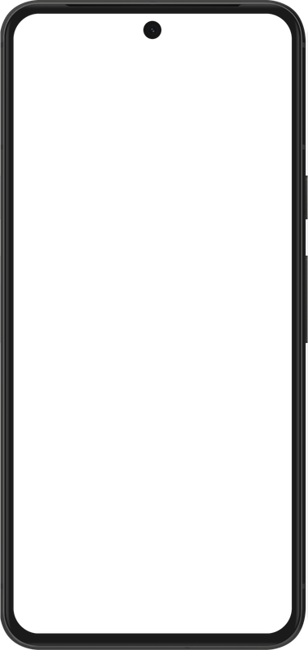

Practice independently
Explore possible distortions and write an alternative interpretation.

Exploring the gap between understanding a thinking pattern and recognizing it in yourself.
For the final project of a three-month Android development module, we had eight weeks to put what we'd learned into practice: fragments and navigation, RecyclerViews, ViewModels, LiveData and observers, as well as a required API integration.
We could decide what kind of app to build. Given my background in Cognitive Science and my personal experience with Metacognitive Training (MCT), I chose to focus on something I'd found particularly difficult: recognizing cognitive distortions in my own thinking. I developed the concept and Android implementation independently as part of the course project.
Psychoeducation can help us better understand ourselves and our reactions. But recognizing a thinking pattern in an example is different from noticing it in yourself, especially when your own interpretation feels completely convincing.
That gap between understanding and applying what I'd learned became the starting point for Pattern Patrol.
I wanted to build an exercise around thoughts that come up in everyday life, rather than predefined examples of cognitive distortions.
A thought is recorded under a selected day. From there, users can look for possible cognitive distortions themselves, ask the AI for suggestions, or combine both approaches. The app also included an Education tab with a reference list of cognitive distortions and placeholders for educational articles.
The aim is not simply to label a distortion, but to question an interpretation and consider alternatives. AI can help identify patterns, but its suggestions alone do not complete the exercise. Only after users have written their own alternative interpretation does the thought appear with a green check in the diary overview.
Explore possible distortions and write an alternative interpretation.

Ask for suggestions when it is difficult to recognize a pattern yourself.
I structured the app using Kotlin data classes for days, thoughts, distortions and observations, with a repository providing reference and sample data.
A shared ViewModel kept track of the selected day, thought and associated observations across screens. Fragments and RecyclerView adapters handled the interface, while LiveData and observers connected changes in the ViewModel to what was displayed.
Each day contains thoughts; a thought can have personal observations and AI suggestions.
An API integration was required for the final project. I chose OpenAI to suggest possible cognitive distortions when users struggled to recognize them on their own.
The interesting part was turning the AI's response into something the Android interface could display. I requested distortion names and explanations in a fixed format, sent the request in a coroutine, and converted the returned text into Observation objects.
The original instructions sent with the user’s thought, including the expected format.
Pattern Patrol was a completed course prototype, not a finished journaling app. The day view used fifteen generated dates and sample data, and entries were stored only in memory. The Education tab was also an early draft, with placeholder articles.
Technically, I'd improve the separation of responsibilities, error handling and reliability of the AI integration.
With more time to develop the concept, I'd rethink the diary structure and the overall experience. Thoughts aren't always neatly separated into entries with titles, and identifying a distortion is only one part of reflecting on it.
Conversational AI opens up new possibilities for supporting reflection, but I'd want to explore them carefully. That would mean working with reliable psychological resources, defining how the AI should respond and evaluating how people experience and respond to it with appropriate expertise and safeguards, especially when people share sensitive thoughts.